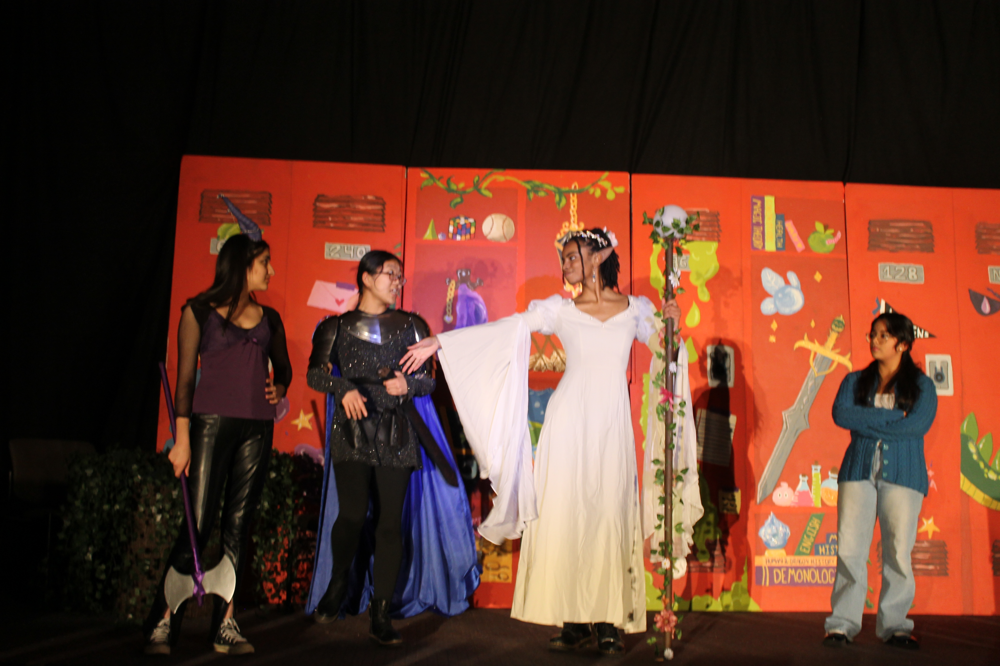
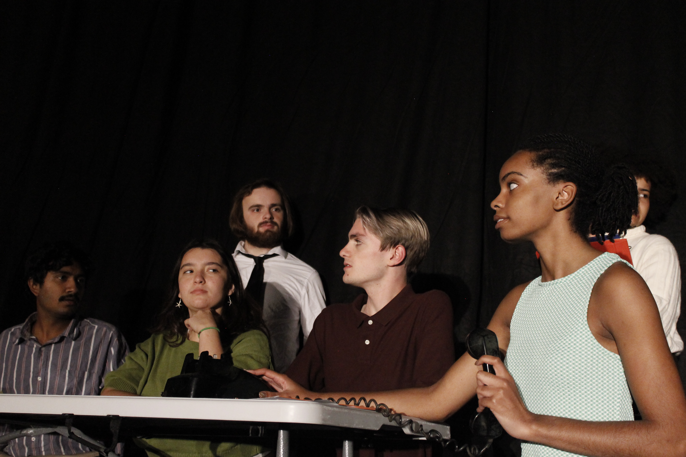
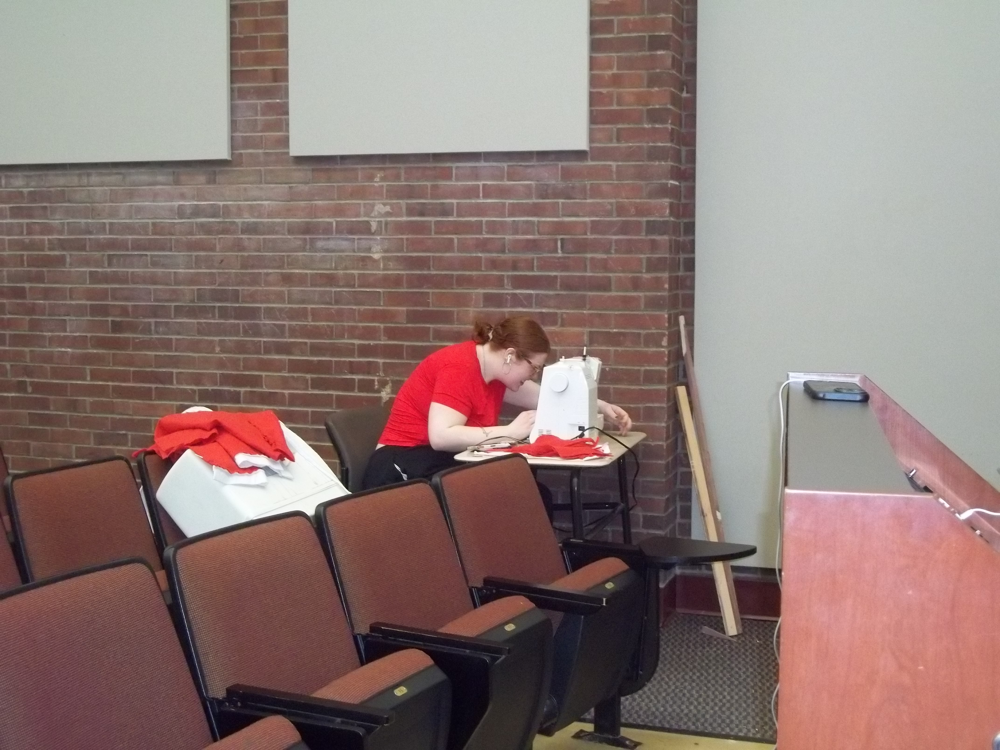
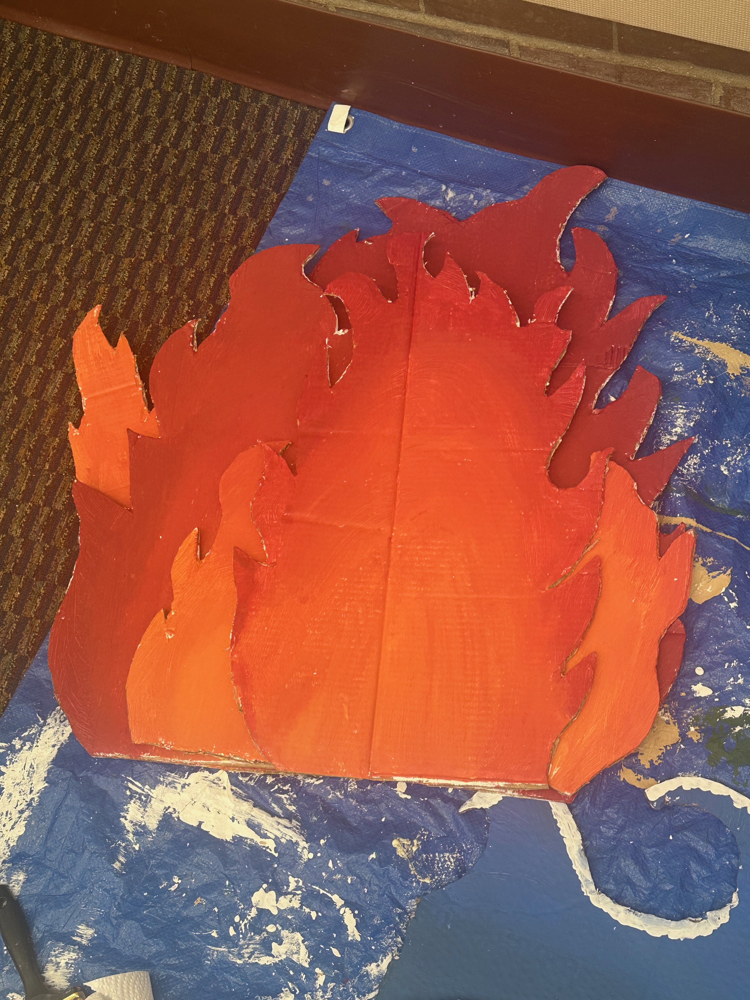
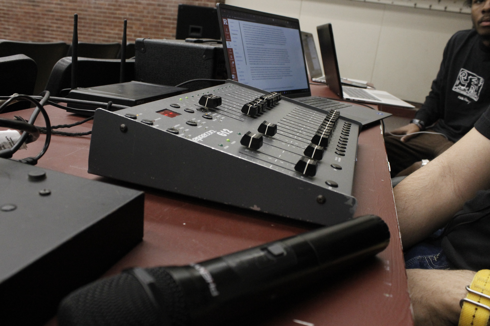

Overview
Within the world of theater, there are many roles one can take on. There are also different types of productions someone can act in. For the purposes of this website, I will not be focusing on musicals as I would like to emphasize less widely discussed forms of theater. I will be explaining the difference between and sketch show and a straight play as well as going into a few of the roles that you can take on behind the scenes. Because the world of theater is so large this will not be an exhaustive list but I will be explaining roles I personally have experience with! I chose to only put productions I have acted in and backstage roles I have personally worked on because I felt that I would be able to give the best description of these roles. If you don't see something here that interests you I encourage you to do your own research! While I have experienced many different sides of the theater world it would be impossible for me to fully do justice to each role that I describe. It is also important for me to note that my main experience when it comes to theater is in acting so my experience in the production staff section is more limited.
Onstage Roles
For the first category of roles I have included a mix of sketch shows and straight plays that I have participated in. First, let's start with what a sketch show is. A sketch show is a collection of short scripted scenes with each scene revolving around one character or joke. A straight play is a longer theatrical production that does not use music.
She Kills Monsters
Ske Kills Monsters by Qui Nguyen follows Agnes Evans who finds her late sister's Dungeons and Dragons game. As she plays through the game, she navigates grief and gets the chance to connect with her sister. In this show, I played Kaliope once of the in-game characters Agnes interacts with. This was one of my favorite plays I have acted in. I got the chance to experiment with stage combat and playing a non-human character. For people who like a lot of movement but don’t necessarily want to do a musical doing a show with choreographed combat could be a fun experience for you!
Dracula of Pennsylvania
Dracula of Pennsylvania by Don Goodrum follows Drake Prescott who believes he is a vampire after witnessing his mother's death. In this show I played his therapist. I found this role to be a good challenge because all my scenes were very emotional and I wanted to handle them with the proper care. I also enjoyed diving into exploring my character and finding how I thought she’d act the more I rehearsed the scenes.
The Fall of Scott Hall
The fall of Scott Hall was an apocalypse-themed sketch comedy show. All the sketches in the show were student-written, and the show was also directed and coordinated by students. This show was a bit of a more stressful experience for me because I was originally the assistant stage manager but then three actors dropped out and I had to fill some of their roles. Despise this I always enjoy getting to work on my comedy skills when I am in a sketch show.
Comic Relief
Comic Relief was a sketch comedy show for charity. This was another show where I had to fill in as an actor. I was one of the directors of this show but due to losing an actor I had to fill their roles last minute. Despite how stressful that was I enjoyed the roles I got to play for this show because they we’re roles I would not typically be cast in so I got to show some of my range. While both of the sketch shows I had here were not planned acting experiences it was a different type of show then I was used to which I enjoyed.

She Kills Monsters (Kaliope)

Dracula of Pennsylvania (Dr. Marquette)
.jpg)
The Fall of Scott Hall
.jpg)
The Fall of Scott Hall
.jpg)
The Fall of Scott Hall

Comic Relief
| Show | Enjoyment | Time Commitment |
| She Kills Monsters | 5/5 | 3/5 |
| Dracula of Pennsylvania | 4/5 | 2/5 |
| The Fall Of Scott Hall | 3.5/5 | 5/5 |
| Comic Relief | 4/5 | 4/5 |
Backstage Roles
The next category is a little broader. There is a large variety of roles one can take on backstage. Featured in the pictures I have set design, props coordinator, costumes coordinator, directing, sound designer, and spotlight operator. When people think about theater they often only think about the acting portion but I do feel like there is something for everyone if you look closer. Along with the roles listed you could also look into getting into more administrative work such as marketing or managing finances if you don't feel creatively inclined.
.jpeg)
Set Designer

Costumes Coordinator

Props Coordinator

Director

Sound Designer
Spotlight Operator
| Role | Enjoyment | Time Commitment |
| Set Designer | 4/5 | 5/5 |
| Costumes Coordinator | 3/5 | 3/5 |
| Props Coordinator | 5/5 | 4/5 |
| Director | 4/5 | 5/5 |
| Sound Designer | 4/5 | 3/5 |
| Spotlight Operator | 3/5 | 3/5 |